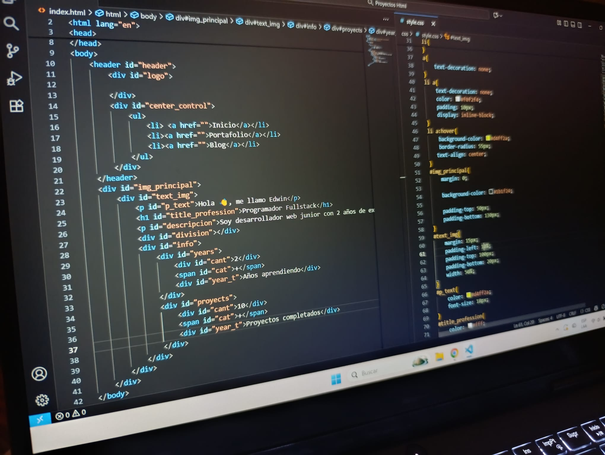

/
MI HISTORIA
Como comence como desarrolador web
Desde los 16 años me interesé por el desarrollo web y la creación de servidores. Lo que comenzó como curiosidad se convirtió en mi camino profesional como desarrollador.
/
MI HISTORIA
Mi primera pagina
Mi primera pagina fue cuando estudiaba ingenieria de software en mi pais natal,como proyecto de una materia me base en lenguajes de programacion simples pero fue lo mejor y me entusiasme